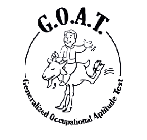

Volver
Repetir

PREGUNTA 1
.
PREGUNTA 2
2- ¡Enhorabuena! Has entrado en uno de los equipos de béisbol del Refugio 101. ¿Qué posición prefieres? (Lanzador, Receptor, Bateador o Ninguna)
PREGUNTA 3
Estando de práctica en la clínica, un paciente entra a trompicones con una extraña infección en el pie. La infección se está extendiendo a un ritmo alarmante, pero el doctor ha salido un momento. ¿Qué haces?
Seleccione una opción
PREGUNTA 4
Encuentras a un joven perdido en los niveles más bajos del refugio. Está hambriento y asustado, pero también parece estar en posesión de objetos robados. ¿Qué haces?
Seleccione una opción
PREGUNTA 5
Encuentras a un joven perdido en los niveles más bajos del refugio. Está hambriento y asustado, pero también parece estar en posesión de objetos robados. ¿Qué haces?
PREGUNTA 6
Encuentras a un joven perdido en los niveles más bajos del refugio. Está hambriento y asustado, pero también parece estar en posesión de objetos robados. ¿Qué haces?
PREGUNTA 7
Encuentras a un joven perdido en los niveles más bajos del refugio. Está hambriento y asustado, pero también parece estar en posesión de objetos robados. ¿Qué haces?
PREGUNTA 8
Encuentras a un joven perdido en los niveles más bajos del refugio. Está hambriento y asustado, pero también parece estar en posesión de objetos robados. ¿Qué haces?
PREGUNTA 9
Encuentras a un joven perdido en los niveles más bajos del refugio. Está hambriento y asustado, pero también parece estar en posesión de objetos robados. ¿Qué haces?
PREGUNTA 10
Encuentras a un joven perdido en los niveles más bajos del refugio. Está hambriento y asustado, pero también parece estar en posesión de objetos robados. ¿Qué haces?
.
.